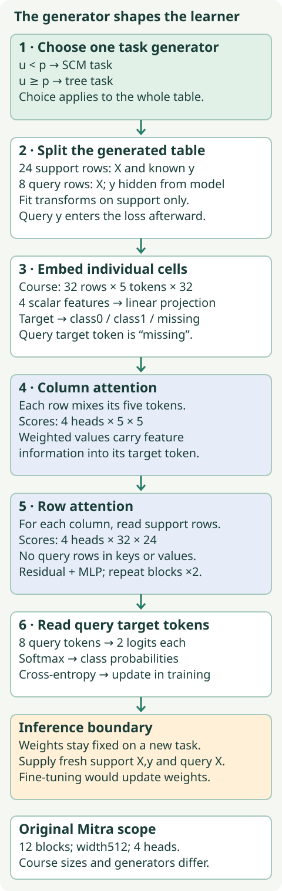
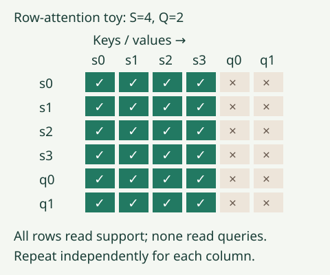
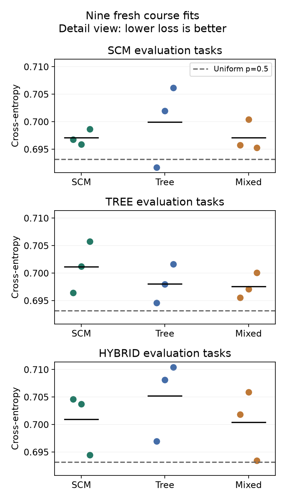

Research bridge · B06 · Design a controlled prior comparison
Mitra: the prior is part of the model¶
Your tangible win: design, execute and interpret a comparison in which the training-task generator changes while the learner and its budget stay fixed. This matters to relational foundation models: synthetic databases encode assumptions about relations before a model ever sees a real customer or event.
B05 left a question open. Real-data episodes provide experience, but which tasks should a model experience when training data are generated? Mitra makes this distribution a central design choice. Read Mitra §§3–4 and Appendix C.3, then Mitra-v2 §2 for the distinction between a mixture of tasks and mixed mechanisms inside a task.
Scope check. Nine fresh course fits and 4,320 predictions are complete. All arms are near chance; none beats the uniform-probability baseline in mean cross-entropy. Original Mitra Table 12 remains
INCOMPLETE_SOURCE_PROTOCOL. These are separate findings, not conflicting labels.
Retrieve before reading¶
- From B05: which labels may enter a prediction-time context, and which may only score the answer?
- From L063: how can a fixed network behave differently when its training-task distribution changes?
- A benchmark helps choose a mixture weight. Is it still an untouched final test?
Write your answers before opening the explanations. Return to these prompts after one, seven and thirty days following your completion; author preparation does not count as completion.
1 · A prior is a recipe for tasks¶
A task is a small table together with a prediction problem. A generator creates such a task from random choices. A prior is the resulting probability distribution over tasks. It determines which relationships the learner repeatedly encounters.
In plain terms. A student repeatedly taught smooth relationships and a student repeatedly taught abrupt thresholds may develop different habits, even with the same learning machinery.
A structural causal model (SCM) describes variables through directed, acyclic dependencies: each variable is computed from earlier parent variables and a noise input. Acyclic means no path returns to its starting node. Sampling these equations creates dependent columns. Naming a synthetic generator “causal” does not validate causal assumptions in a real deployment.
A tree prior creates piecewise relationships using threshold decisions. A tree might assign one target score when x₀ > 0.2, another otherwise. Original Mitra uses multiple tree families; our course experiment uses a single depth-two tree proxy. The implementation and limitations appear in the protocol.
Worked example. Let p=0.5 be the chance of selecting SCM and u=0.4 a draw between zero and one. Because u<p, generate the entire next task from SCM. If u=0.6, generate it from the tree prior. The mixture law is P(task) = p P_SCM(task) + (1−p) P_tree(task); it describes a choice between distributions, not an average of two target values.
Predict first: with the four fixed draws below, how many tasks switch when p changes from 0.5 to 0.75?
Change the prior; keep the draws
This miniature visual has only four tasks. The measured course experiment stratifies 640 draws per fit to give the equal mixture exactly 320 SCM and 320 tree tasks. Shuffling changes their order. Ordinary independent draws would fluctuate around the expected count; this variance-control choice is disclosed and is not the paper's sampler.
2 · Outer mixtures and inner mechanisms¶
An outer mixture chooses one generator for each table. A hybrid mechanism combines different functional families within the process that creates one table. These are different levels of variation.
Worked example. An outer draw picks either an SCM score of 0.8 or a tree score of −0.2 for an illustrative input. A hypothetical inner additive hybrid computes 0.5×0.8 + 0.5×(−0.2) = 0.3 before adding noise and converting the score into a class. Averages within a task are not the same operation as choosing between whole tasks.
| Level | What the choice changes | What remains one object |
|---|---|---|
| Outer task mixture | Which generator produces the next table | One complete table |
| Within-task hybrid | Which mechanisms generate dependent variables | One joint task distribution |
| Prediction ensemble | Which trained predictions are combined | One evaluation query |
Mitra-v2's Hybrid SCM uses different mechanisms within a causal graph; its outer distribution also includes the base SCM and tree generators. Our held-out “hybrid” family is only an additive course proxy. It is never used for pretraining here. See the versioned specification before equating the names.
3 · Model architecture: where the generated task goes¶
Support rows are labeled examples supplied as context. Query rows are examples whose targets the model must predict. A token is a vector representing a cell; its width is the number of coordinates. An attention head computes weighted combinations of other tokens; several heads learn different projections. A logit is an unnormalized class score; softmax turns logits into probabilities that sum to one.
Original Mitra uses cell-level attention across columns and rows, with twelve layers of width 512 and four heads. Our visible course learner retains these two attention directions but uses two blocks of width 32 and simplified embeddings. The architecture picture explicitly labels the course dimensions. Original support preprocessing includes a quantile transform that the course does not implement. Original architecture and preprocessing

Follow one query. Its four numeric features become four vectors. A fifth token says its target is missing. Column attention combines these tokens within that row. Row attention then reads the support representations of the corresponding columns. Repeating both operations lets feature relationships and labeled context meet. The head reads the query's target token and produces two class probabilities.
The attention calculation. Each token is linearly projected into a query vector q, key vector k and value vector v. We compute scores q·k/√d, where d is the per-head width, and softmax these scores over allowed keys. The output is the weighted sum of values. In row attention the keys and values contain support rows only. Thus changing another query cannot change this query's result. A residual connection adds the incoming representation to the attention update. A small multilayer perceptron (MLP) applies a learned nonlinear transformation afterward.

Worked shape trace. Twenty-four support rows plus eight queries give 32 rows. Four features plus one target token give five columns. The hidden tensor is [batch,32,5,32]. Column scores for one row have shape [4,5,5]. Row scores for one column have shape [4,32,24]. Each head has width 32/4=8. The final output is [batch,8,2].
The course standardizes each feature with support mean μ and population standard deviation σ: (x−μ)/max(σ,10⁻⁶). For support [1,3], μ=2 and σ=1, so query 5 becomes 3. A query value cannot alter μ or σ. The label token accepts support labels only; query labels are passed separately to cross-entropy during training.
Cross-entropy is the negative logarithm of the probability assigned to the true class. Assigning probability 0.5 gives loss −ln(0.5)≈0.693147. Lower is better. During pretraining, its gradients update weights. During forward-only in-context learning (ICL), the weights stay fixed and the supplied support changes. Fine-tuning updates the weights on the downstream task; it requires a separate comparison contract.
4 · Why “more diverse” is not sufficient¶
Mitra analyzes how models trained on one generator perform on tasks from other generators. A generalizability matrix records training generators as rows and evaluation generators as columns. Its diagonal measures within-generator behavior; off-diagonal entries expose possible coverage gaps. A separate performance vector records behavior on real datasets. The paper uses these observations to motivate prior selection. Mitra §3.2
A low diagonal score could also reflect a difficult task or inadequate optimization. It is not by itself proof that a prior is useful. The course run below makes this caution concrete: near-chance scores cannot support a rich story about learned diversity.
A development set may guide mixture choice. A final evaluation set estimates behavior after that choice has been frozen. Once final results influence the choice, that set has become development evidence. This applies even if no raw benchmark row enters gradient training.
Predict first: which p will the development losses choose? What changes if selection instead uses the final column?
Which evidence chooses p?
Hypothetical cross-entropy; lower is better.
| SCM p | Development | Final |
|---|---|---|
| 0.3 | 0.42 | 0.41 |
| 0.5 | 0.40 | 0.39 |
| 0.7 | 0.38 | 0.43 |
The numbers in this selector are deliberately hypothetical, not paper or course scores. No dataset selected our course weight: p=0.5 was fixed before execution. That preserves the declared comparison but does not make three synthetic task families representative of the world.
5 · The complete controlled course experiment¶
Held fixed: learner, loss, optimizer, preprocessing, 640 training episodes per fit, final-step checkpoint rule and all evaluation tasks. For each seed, all arms start with byte-identical parameter tensors. Varied: the training generator distribution. Measured: accuracy and cross-entropy on twenty SCM, twenty tree and twenty hybrid tasks. All fits predict the same eight query identities per task.
The three arms and three seeds produce nine fresh fits, 1,440 updates and 5,760 training tasks. Evaluation produces 4,320 saved query predictions. The hybrid family is absent from training, but shares construction code and functional components with the other families: it is a bounded mechanism check, not an independent database transfer test.
Isolate the generator effect
Which intervention belongs in the prior comparison?
Commit a prediction before revealing: will mixed pretraining beat both single-prior arms? What result would prevent that conclusion?
Reveal the measured course results
| Evaluation family | Training prior | Accuracy | Cross-entropy |
|---|---|---|---|
| scm | scm | 0.5021 ± 0.0072 | 0.697096 ± 0.001416 |
| scm | tree | 0.5062 ± 0.0217 | 0.699938 ± 0.007442 |
| scm | mixed | 0.4958 ± 0.0036 | 0.697108 ± 0.002839 |
| tree | scm | 0.4896 ± 0.0219 | 0.701129 ± 0.004675 |
| tree | tree | 0.5125 ± 0.0000 | 0.698061 ± 0.003541 |
| tree | mixed | 0.5083 ± 0.0072 | 0.697556 ± 0.002302 |
| hybrid | scm | 0.4979 ± 0.0237 | 0.700928 ± 0.005638 |
| hybrid | tree | 0.4771 ± 0.0036 | 0.705181 ± 0.007191 |
| hybrid | mixed | 0.4937 ± 0.0325 | 0.700395 ± 0.006333 |
Each cell reports the mean ± sample standard deviation across three training seeds, conditional on the same fixed evaluation tasks. This is descriptive variability, not a confidence interval over real datasets. Per-seed points and paired contrasts are preserved in the audit.

What happened. Every arm's family-mean cross-entropy exceeds the analytical uniform baseline 0.693147. Accuracy stays near 50%. Mixed-prior loss changes slightly relative to the single-prior arms, but this does not establish useful generalization. The experiment faithfully executed its fixed short training budget; its adequacy for learning useful ICL remains unestablished.
What not to repair after seeing the test. Do not increase updates, choose a seed or adjust p until the final matrix looks favorable and report it as the original experiment. A follow-up requires a new protocol and development evidence. The negative result is valuable: controls make an experiment interpretable; they do not guarantee a capable learner.
Paired interpretation. For each seed s, define Δₛ = loss(mixed,s) − loss(SCM,s) on the same queries. Negative favors mixed. Match identities before subtraction; never zip two dictionaries by accidental iteration order. We report each Δ and its descriptive seed spread. Synthetic families are not three independent real datasets, so we make no benchmark-ranking significance claim.
6 · Full reproduction: the exact boundary¶
The named paper target is B06-MITRA-TABLE12, all six p settings on original TabRepo ten-fold classification. Changing generators means training different checkpoints. A single released predictor cannot establish the effect of that change.
| Lane | Current evidence | Remaining boundary |
|---|---|---|
| Course generator comparison | Nine fresh fits, complete predictions, independent scoring | Near chance; no original-source parity |
| Saved course checkpoints | Predictions re-executed and matched | Replay is not new training |
| Original Table 12 | Paper and release identities archived | Six checkpoints/training histories, split and evaluator identities unresolved |
| Original full pretraining | Paper reports 60 hours on eight A100s for its main run | NOT_RUN; outside this lesson budget |
| Mitra-v2 fine-tuning release | Source snapshot archived separately | Does not establish original Table 12 reproducibility |
The inspected classifier and regressor releases list one checkpoint each. The linked fine-tuning repository currently targets v2. We cannot authenticate a complete original six-arm reproduction pipeline from these artifacts. The operator therefore provides an executable evidence preflight and refuses --run while missing identities remain. It is not advertised as a complete runnable paper trainer. Release evidence
Scope check. The small course code is fully visible and runnable. Larger dimensions would still leave missing original generators, histories and evaluation provenance. Budget limits never justify silently claiming that a different experiment reproduces the paper.
Lab · implement the contract, then defend the conclusion¶
Student notebook · Executed solution · Portable source/evidence archive · Reference card
- Implement the whole-task prior choice, including endpoint and invalid-input behavior.
- Implement support-only normalization and pass a query-intervention check.
- Match seed identities before computing paired effects.
- Run the visible learner, load each saved checkpoint and regenerate all held-out predictions. The notebook also performs one fresh update with your live functions. Its default replay is labeled separately from the author's nine fresh fits.
- Explain why these measurements do not demonstrate the claimed benefit of Mitra's prior design. Name the missing inputs for Table 12.
Exit ticket: submit your passing checks and a written defense covering the fixed/varied/measured contract, outer versus inner mixing, benchmark-selection exposure, the uniform baseline and reproduction gaps. Status remains PENDING_WRITTEN_DEFENSE until your work is reviewed.
Relational bridge. A synthetic relational generator also chooses distributions over keys, links, degrees, dates and missingness. The same architecture can inherit different habits from those choices. B13 will revisit that design problem; today earns the ability to isolate a prior change before attributing a gain to it.
Ask the agent follow-up questions about any shape, source boundary or surprising result. For discussion with practitioners, bring a concrete reproducible counterexample to the AutoGluon discussions; a benchmark headline alone is not enough.